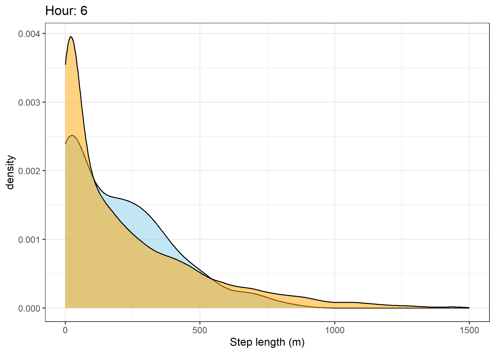
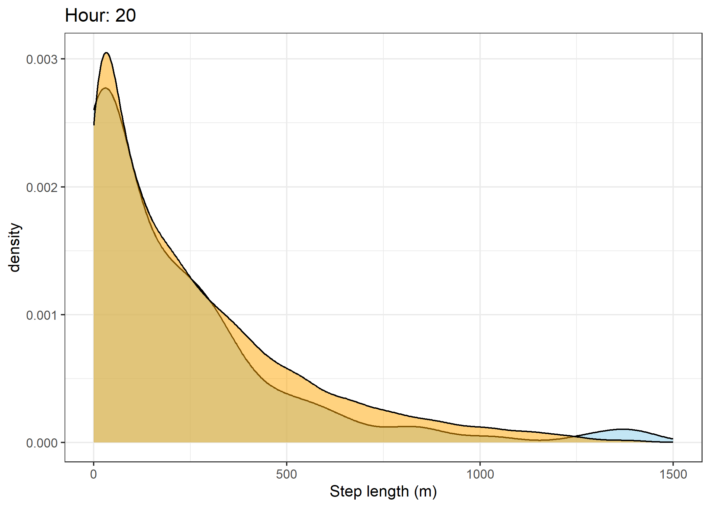
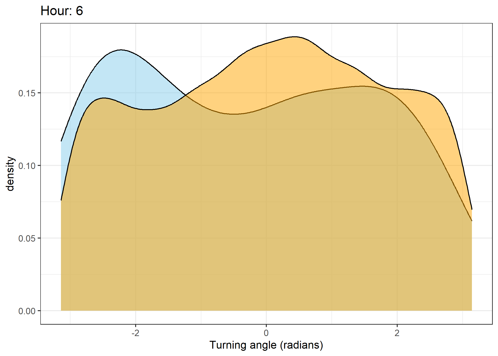
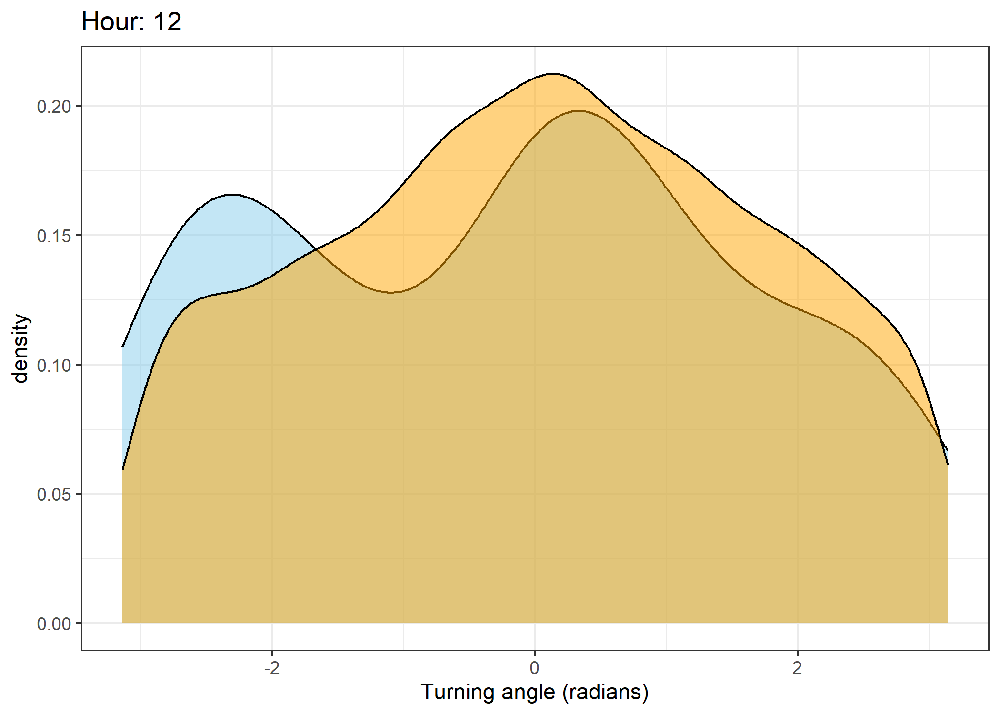
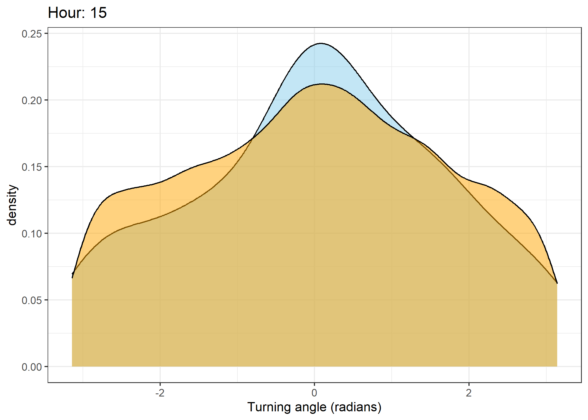
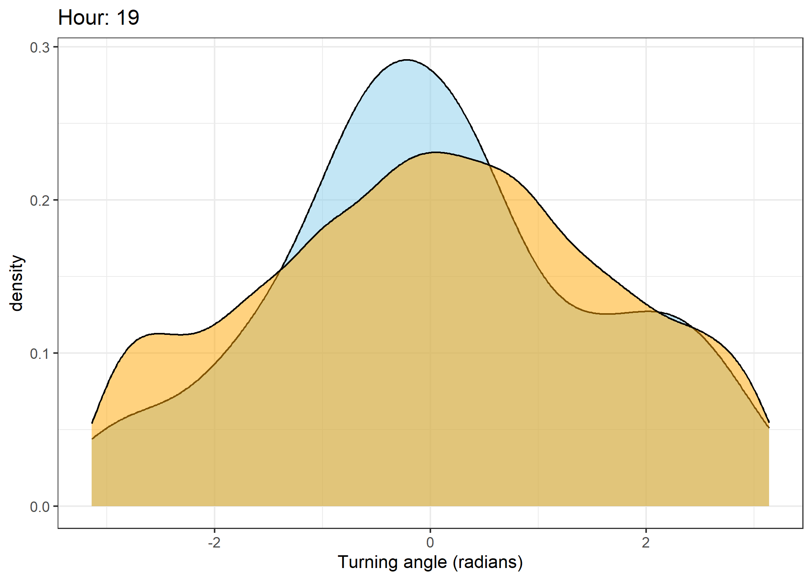
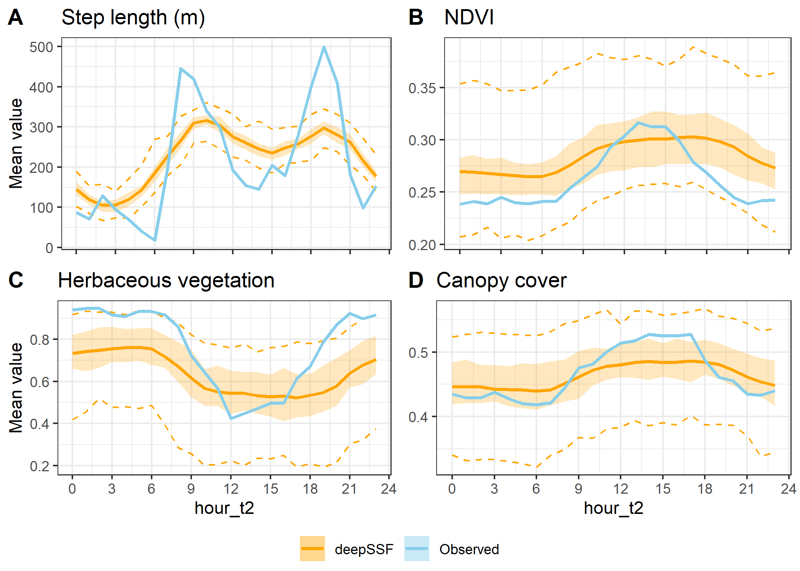

Assessing deepSSF trajectories
Now that we have generated trajectories using the deepSSF_simulations.ipynb script, we can check how well they capture different aspects of the observed data. This includes looking at the distribution of step lengths and turning angles, as well as comparing the observed and simulated trajectories in terms of the environmental covariates. We could also further summarise the trajectories using path-level summaries following a similar approach.
Loading packages
Reading in the environmental covariates
Code
ndvi <- rast("mapping/cropped rasters/ndvi_GEE_projected_watermask20230207.tif")
slope <- rast("mapping/cropped rasters/slope_raster.tif")
veg_herby <- rast("mapping/cropped rasters/veg_herby.tif")
canopy_cover <- rast("mapping/cropped rasters/canopy_cover.tif")
# change the names (these will become the column names when extracting
# covariate values at the used and random steps)
names(ndvi) <- rep("ndvi", terra::nlyr(ndvi))
names(slope) <- "slope"
names(veg_herby) <- "veg_herby"
names(canopy_cover) <- "canopy_cover"
# for ggplot (and arbitrary index)
ndvi_df <- as.data.frame(ndvi[[1]], xy = TRUE)
# create discrete breaks for the NDVI for plotting
ndvi_quantiles <- quantile(ndvi_df$ndvi, probs = c(0.01, 0.99))
ndvi_breaks <- seq(ndvi_quantiles[1], ndvi_quantiles[2], length.out = 9)
ndvi_df$ndvi_discrete <- cut(ndvi_df$ndvi, breaks=ndvi_breaks, dig.lab = 2)Import observed buffalo data
Rows: 115776 Columns: 4
── Column specification ────────────────────────────────────────────────────────
Delimiter: ","
dbl (3): x_, y_, id
dttm (1): t_
ℹ Use `spec()` to retrieve the full column specification for this data.
ℹ Specify the column types or set `show_col_types = FALSE` to quiet this message.Code
Calculate step info
Code
hourly_lag <- 1
buffalo <- buffalo %>% mutate(
id = id,
x1 = x_,
y1 = y_,
x2 = lead(x1, n = hourly_lag, default = NA),
y2 = lead(y1, n = hourly_lag, default = NA),
t1 = t_,
t2 = lead(t1, n = hourly_lag, default = NA),
hour_t1 = lubridate::hour(t_),
hour_t2 = lead(hour_t1, n = hourly_lag, default = NA),
yday_t1 = lubridate::yday(t_), # day of the year
yday_t2 = lead(yday_t1, n = hourly_lag, default = NA),
sl = c(sqrt(diff(y_)^2 + diff(x_)^2), NA), # step lengths
log_sl = log(sl),
bearing = c(atan2(diff(y_), diff(x_)), NA),
ta = c(NA, ifelse(
diff(bearing) > pi, diff(bearing)-(2*pi), ifelse(
diff(bearing) < -pi, diff(bearing)+(2*pi), diff(bearing)))), # turning angles
cos_ta = cos(ta),
.keep = "none"
)
head(buffalo)To compare the observed buffalo data to the simulated data, select a subset of the buffalo data
Import multiple deep learning trajectories
Code
# read in multiple csv files with similar filenames and bind them together
sim_data_full_list <-
list.files("Python/outputs/deepSSF_trajectories/2005", pattern = "*.csv", full.names = T)
# to filter filenames with any string matching conditions
sim_data_filenames <- grep("", sim_data_full_list, value = T) %>%
grep("3000steps", x = ., value = T)
# read dataframes as a single dataframe with id identifier
sim_data_all <- sim_data_filenames %>%
map_dfr(read_csv, .id = "id") %>%
mutate(
...1 = NULL
)
head(sim_data_all)Calculate step lengths and turning angles etc
Code
hourly_lag <- 1
# Nest the data by 'id'
sim_data_nested <- sim_data_all %>%
group_by(id) %>%
nest()
# Map the mutate transformation over each nested tibble
sim_data_nested <- sim_data_nested %>%
mutate(data = map(data, ~ .x %>%
mutate(
x1 = x,
y1 = y,
x2 = lead(x1, n = hourly_lag, default = NA),
y2 = lead(y1, n = hourly_lag, default = NA),
date = as.Date(yday - 1, origin = "2018-01-01"),
t1 = as.POSIXct(paste(date, hour), format = "%Y-%m-%d %H"),
t2 = lead(t1, n = hourly_lag, default = NA),
yday_t1 = lubridate::yday(t1), # day of the year
yday_t2 = lead(yday_t1, n = hourly_lag, default = NA),
hour_t1 = lubridate::hour(t1),
hour_t2 = lead(hour_t1, n = hourly_lag, default = NA),
sl = c(sqrt(diff(y)^2 + diff(x)^2), NA), # step lengths
log_sl = log(sl),
bearing = c(atan2(diff(y), diff(x)), NA),
ta = c(NA, ifelse(
diff(bearing) > pi, diff(bearing) - (2 * pi),
ifelse(diff(bearing) < -pi, diff(bearing) + (2 * pi), diff(bearing))
)),
cos_ta = cos(ta),
.keep = "none"
)
))
# Unnest the transformed data back into a single data frame
sim_data_all <- sim_data_nested %>%
unnest(data) %>%
ungroup() %>%
mutate(id = as.numeric(id))
head(sim_data_all)Combine the observed and simulated datasets
Prepare trajectories for plotting
Plot the obsereved and simulated trajectories
Code
ggplot() +
geom_raster(data = ndvi_df,
aes(x = x, y = y, fill = ndvi_discrete),
alpha = 0.75) +
scale_fill_brewer("ndvi", palette = "Greys",
guide = guide_legend(reverse = TRUE)) +
geom_path(data = all_data %>% filter(id %in% 1:5),
aes(x = x1, y = y1, colour = as.factor(id)),
alpha = 0.75, linewidth = 0.25) +
scale_colour_viridis_d() +
geom_path(data = all_data %>% filter(id == 2005),
aes(x = x1, y = y1),
alpha = 0.75, linewidth = 0.25, colour = "red") +
geom_point(data = all_data %>% slice(1),
aes(x = x1, y = y1), fill = "blue", shape = 23) +
scale_x_continuous("Easting (m)",
limits = c(min(plot_extent[[1]])-buffer,
max(plot_extent[[3]])+buffer)) +
scale_y_continuous("Northing (m)",
limits = c(min(plot_extent[[2]])-buffer,
max(plot_extent[[4]])+buffer)) +
coord_equal() +
theme_bw() +
theme(legend.position = "none")Warning: Removed 106502 rows containing missing values or values outside the scale range
(`geom_raster()`).Plot movement distributions
The skyblue density plot represents the observed data and the orange density plot represents the simulated data.
Step lengths
Code
ggplot() +
geom_density(data = all_data %>% filter(id == 2005),
aes(x = sl),
fill = "skyblue", colour = "skyblue", alpha = 0.5) +
geom_density(data = all_data,
aes(x = sl),
fill = "orange", colour = "orange", alpha = 0.5) +
scale_x_continuous("Step length (m)", limits = c(0, 1500)) +
scale_y_continuous("Density") +
theme_bw()Warning: Removed 24 rows containing non-finite outside the scale range
(`stat_density()`).Warning: Removed 162 rows containing non-finite outside the scale range
(`stat_density()`).Log step lengths
Code
ggplot() +
geom_density(data = all_data %>% filter(id == 2005),
aes(x = sl),
fill = "skyblue", colour = "skyblue", alpha = 0.5) +
geom_density(data = all_data,
aes(x = sl),
fill = "orange", colour = "orange", alpha = 0.5) +
scale_x_log10("log Step length (m)") +
scale_y_continuous("Density") +
theme_bw()Warning: Removed 51 rows containing non-finite outside the scale range
(`stat_density()`).Turning angles
Code
ggplot() +
geom_density(data = all_data %>% filter(id == 2005),
aes(x = ta),
fill = "skyblue", colour = "skyblue", alpha = 0.5) +
geom_density(data = all_data,
aes(x = ta),
fill = "orange", colour = "orange", alpha = 0.5) +
scale_x_continuous("Turning angle (radians)") +
scale_y_continuous("Density") +
theme_bw()Warning: Removed 1 row containing non-finite outside the scale range
(`stat_density()`).Warning: Removed 103 rows containing non-finite outside the scale range
(`stat_density()`).Density of step lengths for each hour
Code
for(i in 0:23) {
print(ggplot() +
geom_density(data = all_data %>% filter(id == 2005 & hour_t1 == i),
aes(x = sl),
fill = "skyblue", colour = "black", alpha = 0.5) +
geom_density(data = all_data %>% filter(hour_t1 == i),
aes(x = sl),
fill = "orange", colour = "black", alpha = 0.5) +
scale_x_continuous("Step length (m)", limits = c(0, 1500)) +
ggtitle(paste0("Hour: ", i)) +
theme_bw())
}Warning: Removed 1 row containing non-finite outside the scale range (`stat_density()`).
Removed 1 row containing non-finite outside the scale range (`stat_density()`).Warning: Removed 2 rows containing non-finite outside the scale range
(`stat_density()`).Warning: Removed 1 row containing non-finite outside the scale range (`stat_density()`).
Removed 1 row containing non-finite outside the scale range (`stat_density()`).Warning: Removed 2 rows containing non-finite outside the scale range
(`stat_density()`).Warning: Removed 3 rows containing non-finite outside the scale range
(`stat_density()`).Warning: Removed 4 rows containing non-finite outside the scale range
(`stat_density()`).Warning: Removed 1 row containing non-finite outside the scale range
(`stat_density()`).Warning: Removed 5 rows containing non-finite outside the scale range
(`stat_density()`).
Warning: Removed 3 rows containing non-finite outside the scale range
(`stat_density()`).Warning: Removed 7 rows containing non-finite outside the scale range
(`stat_density()`).Warning: Removed 4 rows containing non-finite outside the scale range
(`stat_density()`).Warning: Removed 11 rows containing non-finite outside the scale range
(`stat_density()`).Warning: Removed 9 rows containing non-finite outside the scale range
(`stat_density()`).Warning: Removed 2 rows containing non-finite outside the scale range
(`stat_density()`).Warning: Removed 8 rows containing non-finite outside the scale range
(`stat_density()`).Warning: Removed 5 rows containing non-finite outside the scale range
(`stat_density()`).Warning: Removed 4 rows containing non-finite outside the scale range
(`stat_density()`).Warning: Removed 6 rows containing non-finite outside the scale range
(`stat_density()`).Warning: Removed 1 row containing non-finite outside the scale range
(`stat_density()`).Warning: Removed 7 rows containing non-finite outside the scale range
(`stat_density()`).Warning: Removed 8 rows containing non-finite outside the scale range
(`stat_density()`).Warning: Removed 1 row containing non-finite outside the scale range
(`stat_density()`).Warning: Removed 4 rows containing non-finite outside the scale range
(`stat_density()`).Warning: Removed 2 rows containing non-finite outside the scale range
(`stat_density()`).
Removed 4 rows containing non-finite outside the scale range
(`stat_density()`).Warning: Removed 4 rows containing non-finite outside the scale range
(`stat_density()`).Warning: Removed 12 rows containing non-finite outside the scale range
(`stat_density()`).Warning: Removed 2 rows containing non-finite outside the scale range
(`stat_density()`).Warning: Removed 3 rows containing non-finite outside the scale range
(`stat_density()`).
Warning: Removed 1 row containing non-finite outside the scale range (`stat_density()`).
Removed 3 rows containing non-finite outside the scale range
(`stat_density()`).
Warning: Removed 1 row containing non-finite outside the scale range
(`stat_density()`).Warning: Removed 1 row containing non-finite outside the scale range
(`stat_density()`).Warning: Removed 1 row containing non-finite outside the scale range
(`stat_density()`).Warning: Removed 51 rows containing non-finite outside the scale range
(`stat_density()`).Density of turning angles for each hour
Code
for(i in 0:23) {
print(ggplot() +
geom_density(data = all_data %>% filter(id == 2005 & hour_t1 == i),
aes(x = ta),
fill = "skyblue", colour = "black", alpha = 0.5) +
geom_density(data = all_data %>% filter(hour_t1 == i),
aes(x = ta),
fill = "orange", colour = "black", alpha = 0.5) +
scale_x_continuous("Turning angle (radians)", limits = c(-pi, pi)) +
ggtitle(paste0("Hour: ", i)) +
theme_bw())
}Warning: Removed 51 rows containing non-finite outside the scale range
(`stat_density()`).

Warning: Removed 1 row containing non-finite outside the scale range
(`stat_density()`).Warning: Removed 1 row containing non-finite outside the scale range
(`stat_density()`).


Warning: Removed 51 rows containing non-finite outside the scale range
(`stat_density()`).Extract covariate values
To check the distribution of environmental values, we can extract the values of the covariates at the locations of the observed and simulated data.
We also need to index the correct NDVI raster for each row of the data.
Code
# for the simulated data
all_data_xy <- data.frame("x" = all_data$x1, "y" = all_data$y1)
# Calculate ndvi_index for all rows at once using vectorized operation
all_data <- all_data %>%
mutate(
ndvi_index = vapply(t1, function(t) which.min(abs(difftime(t, terra::time(ndvi)))), integer(1)),
)
# Split row indices by the corresponding NDVI layer index
ndvi_groups <- split(seq_len(nrow(all_data_xy)), all_data$ndvi_index)
# Extract values per group in one call per layer
extracted_ndvi <- map2(ndvi_groups, names(ndvi_groups), function(rows, index_str) {
# Convert the layer index from character to numeric if needed
index <- as.numeric(index_str)
terra::extract(ndvi[[index]], all_data_xy[rows, , drop = FALSE])[,2]
})
# Reassemble the extracted ndvi values into a single vector in original order
ndvi_values <- unsplit(extracted_ndvi, all_data$ndvi_index)
# Extract raster data based on calculated ndvi_index
all_data <- all_data %>%
mutate(
ndvi = ndvi_values,
canopy_cover = terra::extract(canopy_cover, all_data_xy)[,2],
veg_herby = terra::extract(veg_herby, all_data_xy)[,2],
slope = terra::extract(slope, all_data_xy)[,2],
) Hourly movement behaviour and selection of covariates
Here we bin the trajectories into the hours of the day, and calculate the mean, median (where appropriate) and sd values for the step lengths and four habitat covariates.
We also save the results as a csv to compare between all of the models.
Code
[1] 51Code
# drop NAs
all_data <- all_data %>% dplyr::select(-date) %>% drop_na()
hourly_habitat <-
all_data %>%
dplyr::group_by(hour_t2, id) %>%
summarise(n = n(),
step_length_mean = mean(sl, na.rm = TRUE),
step_length_median = median(sl, na.rm = TRUE),
step_length_sd = sd(sl, na.rm = TRUE),
ndvi_mean = mean(ndvi, na.rm = TRUE),
ndvi_median = median(ndvi, na.rm = TRUE),
ndvi_sd = sd(ndvi, na.rm = TRUE),
ndvi_min = min(ndvi, na.rm = TRUE),
ndvi_max = max(ndvi, na.rm = TRUE),
ndvi_mean = mean(ndvi, na.rm = TRUE),
ndvi_median = median(ndvi, na.rm = TRUE),
ndvi_sd = sd(ndvi, na.rm = TRUE),
herby_mean = mean(veg_herby, na.rm = TRUE),
herby_sd = sd(veg_herby, na.rm = TRUE),
canopy_mean = mean(canopy_cover/100, na.rm = TRUE),
canopy_sd = sd(canopy_cover/100, na.rm = TRUE),
canopy_min = min(canopy_cover/100, na.rm = TRUE),
canopy_max = max(canopy_cover/100, na.rm = TRUE),
slope_mean = mean(slope, na.rm = TRUE),
slope_median = median(slope, na.rm = TRUE),
slope_sd = sd(slope, na.rm = TRUE),
slope_min = min(slope, na.rm = TRUE),
slope_max = max(slope, na.rm = TRUE)
) %>% ungroup() %>%
mutate(Data = ifelse(id == 2005, "Observed", "deepSSF"))`summarise()` has grouped output by 'hour_t2'. You can override using the
`.groups` argument.Plotting the hourly habitat selection
To show the stochasticity of the simulations, here we show the 25th to 50th quantiles and the 2.5th to 97.5th quantiles of the data. Remember that the `data’ are the means for each hour for each trajectory, so the quantiles are calculated across the means for each hour. We use a dashed-line ribbon for the 95% interval and a solid-line ribbon for the 50% interval. We show the mean as a solid line.
This is the plotting approach that we used in the paper.
Calculate the quantiles
Code
hourly_summary_quantiles <- hourly_habitat_long %>%
dplyr::group_by(Data, hour_t2, variable) %>%
summarise(n = n(),
mean = mean(value, na.rm = TRUE),
sd = sd(value, na.rm = TRUE),
q025 = quantile(value, probs = 0.025, na.rm = TRUE),
q25 = quantile(value, probs = 0.25, na.rm = TRUE),
q50 = quantile(value, probs = 0.5, na.rm = TRUE),
q75 = quantile(value, probs = 0.75, na.rm = TRUE),
q975 = quantile(value, probs = 0.975, na.rm = TRUE))`summarise()` has grouped output by 'Data', 'hour_t2'. You can override using
the `.groups` argument.Set up the plotting parameters
Code
# set plotting parameters here that will change in each plot
buff_path_alpha <- 0.1
ribbon_95_alpha <- 0.5
ribbon_50_alpha <- 0.25
path_95_alpha <- 1
# set path alpha
buff_path_alpha <- 0.25
# linewidth
buff_path_linewidth <- 0.5
# Create color mapping
unique_groups <- unique(hourly_habitat_long$Data)
colors <- viridis(length(unique_groups))
names(colors) <- unique_groups
colors["Observed"] <- "skyblue"
colors["deepSSF"] <- "orange"Hourly covariate selection
Note the tabs for the step lengths and each of the covariates
Code
hourly_path_sl_plot <- ggplot() +
geom_ribbon(data = hourly_summary_quantiles %>%
filter(Data == "Buffalo" & variable == "step_length_mean"),
aes(x = hour_t2, ymin = q25, ymax = q75, fill = Data),
alpha = ribbon_50_alpha) +
geom_ribbon(data = hourly_summary_quantiles %>%
filter(!Data == "Buffalo" & variable == "step_length_mean"),
aes(x = hour_t2, ymin = q25, ymax = q75, fill = Data),
alpha = ribbon_50_alpha) +
geom_path(data = hourly_habitat_long %>%
filter(Data == "Buffalo" & variable == "step_length_mean"),
aes(x = hour_t2, y = value, colour = Data, group = interaction(id, Data)),
alpha = buff_path_alpha,
linewidth = buff_path_linewidth) +
geom_path(data = hourly_summary_quantiles %>%
filter(!Data == "Buffalo" & variable == "step_length_mean"),
aes(x = hour_t2, y = q025, colour = Data),
linetype = "dashed",
alpha = path_95_alpha) +
geom_path(data = hourly_summary_quantiles %>%
filter(!Data == "Buffalo" & variable == "step_length_mean"),
aes(x = hour_t2, y = q975, colour = Data),
linetype = "dashed",
alpha = path_95_alpha) +
geom_path(data = hourly_summary_quantiles %>%
filter(Data == "Buffalo" & variable == "step_length_mean"),
aes(x = hour_t2, y = mean, colour = Data),
linewidth = 1) +
geom_path(data = hourly_summary_quantiles %>%
filter(!Data == "Buffalo" & variable == "step_length_mean"),
aes(x = hour_t2, y = mean, colour = Data),
linewidth = 1) +
scale_fill_manual(values = colors) +
scale_colour_manual(values = colors) +
scale_y_continuous("Mean value") +
scale_x_continuous("hour_t2", breaks = seq(0,24,3)) +
ggtitle("Step length (m)") +
theme_bw() +
theme(legend.position = "bottom")
hourly_path_sl_plotCode
hourly_path_ndvi_plot <- ggplot() +
geom_ribbon(data = hourly_summary_quantiles %>%
filter(Data == "Buffalo" & variable == "ndvi_mean"),
aes(x = hour_t2, ymin = q25, ymax = q75, fill = Data),
alpha = ribbon_50_alpha) +
geom_ribbon(data = hourly_summary_quantiles %>%
filter(!Data == "Buffalo" & variable == "ndvi_mean"),
aes(x = hour_t2, ymin = q25, ymax = q75, fill = Data),
alpha = ribbon_50_alpha) +
geom_path(data = hourly_habitat_long %>%
filter(Data == "Buffalo" & variable == "ndvi_mean"),
aes(x = hour_t2, y = value, colour = Data, group = interaction(id, Data)),
alpha = buff_path_alpha,
linewidth = buff_path_linewidth) +
geom_path(data = hourly_summary_quantiles %>%
filter(!Data == "Buffalo" & variable == "ndvi_mean"),
aes(x = hour_t2, y = q025, colour = Data),
linetype = "dashed",
alpha = path_95_alpha) +
geom_path(data = hourly_summary_quantiles %>%
filter(!Data == "Buffalo" & variable == "ndvi_mean"),
aes(x = hour_t2, y = q975, colour = Data),
linetype = "dashed",
alpha = path_95_alpha) +
geom_path(data = hourly_summary_quantiles %>%
filter(Data == "Buffalo" & variable == "ndvi_mean"),
aes(x = hour_t2, y = mean, colour = Data),
linewidth = 1) +
geom_path(data = hourly_summary_quantiles %>%
filter(!Data == "Buffalo" & variable == "ndvi_mean"),
aes(x = hour_t2, y = mean, colour = Data),
linewidth = 1) +
scale_fill_manual(values = colors) +
scale_colour_manual(values = colors) +
scale_y_continuous("Mean value") +
scale_x_continuous("hour_t2", breaks = seq(0,24,3)) +
ggtitle("NDVI") +
theme_bw()
hourly_path_ndvi_plotCode
hourly_path_canopy_plot <- ggplot() +
geom_ribbon(data = hourly_summary_quantiles %>%
filter(Data == "Buffalo" & variable == "canopy_mean"),
aes(x = hour_t2, ymin = q25, ymax = q75, fill = Data),
alpha = ribbon_50_alpha) +
geom_ribbon(data = hourly_summary_quantiles %>%
filter(!Data == "Buffalo" & variable == "canopy_mean"),
aes(x = hour_t2, ymin = q25, ymax = q75, fill = Data),
alpha = ribbon_50_alpha) +
geom_path(data = hourly_habitat_long %>%
filter(Data == "Buffalo" & variable == "canopy_mean"),
aes(x = hour_t2, y = value, colour = Data, group = interaction(id, Data)),
alpha = buff_path_alpha,
linewidth = buff_path_linewidth) +
geom_path(data = hourly_summary_quantiles %>%
filter(!Data == "Buffalo" & variable == "canopy_mean"),
aes(x = hour_t2, y = q025, colour = Data),
linetype = "dashed",
alpha = path_95_alpha) +
geom_path(data = hourly_summary_quantiles %>%
filter(!Data == "Buffalo" & variable == "canopy_mean"),
aes(x = hour_t2, y = q975, colour = Data),
linetype = "dashed",
alpha = path_95_alpha) +
geom_path(data = hourly_summary_quantiles %>%
filter(Data == "Buffalo" & variable == "canopy_mean"),
aes(x = hour_t2, y = mean, colour = Data),
linewidth = 1) +
geom_path(data = hourly_summary_quantiles %>%
filter(!Data == "Buffalo" & variable == "canopy_mean"),
aes(x = hour_t2, y = mean, colour = Data),
linewidth = 1) +
scale_fill_manual(values = colors) +
scale_colour_manual(values = colors) +
scale_y_continuous("Mean value") +
scale_x_continuous("hour_t2", breaks = seq(0,24,3)) +
ggtitle("Canopy cover") +
theme_bw()
hourly_path_canopy_plotCode
hourly_path_herby_plot <- ggplot() +
geom_ribbon(data = hourly_summary_quantiles %>%
filter(Data == "Buffalo" & variable == "herby_mean"),
aes(x = hour_t2, ymin = q25, ymax = q75, fill = Data),
alpha = ribbon_50_alpha) +
geom_ribbon(data = hourly_summary_quantiles %>%
filter(!Data == "Buffalo" & variable == "herby_mean"),
aes(x = hour_t2, ymin = q25, ymax = q75, fill = Data),
alpha = ribbon_50_alpha) +
geom_path(data = hourly_habitat_long %>%
filter(Data == "Buffalo" & variable == "herby_mean"),
aes(x = hour_t2, y = value, colour = Data, group = interaction(id, Data)),
alpha = buff_path_alpha,
linewidth = buff_path_linewidth) +
geom_path(data = hourly_summary_quantiles %>%
filter(!Data == "Buffalo" & variable == "herby_mean"),
aes(x = hour_t2, y = q025, colour = Data),
linetype = "dashed",
alpha = path_95_alpha) +
geom_path(data = hourly_summary_quantiles %>%
filter(!Data == "Buffalo" & variable == "herby_mean"),
aes(x = hour_t2, y = q975, colour = Data),
linetype = "dashed",
alpha = path_95_alpha) +
geom_path(data = hourly_summary_quantiles %>%
filter(Data == "Buffalo" & variable == "herby_mean"),
aes(x = hour_t2, y = mean, colour = Data),
linewidth = 1) +
geom_path(data = hourly_summary_quantiles %>%
filter(!Data == "Buffalo" & variable == "herby_mean"),
aes(x = hour_t2, y = mean, colour = Data),
linewidth = 1) +
scale_fill_manual(values = colors) +
scale_colour_manual(values = colors) +
scale_y_continuous("Mean value") +
scale_x_continuous("hour_t2", breaks = seq(0,24,3)) +
ggtitle("Herbaceous vegetation") +
theme_bw()
hourly_path_herby_plotCode
hourly_path_slope_plot <- ggplot() +
geom_ribbon(data = hourly_summary_quantiles %>%
filter(Data == "Buffalo" & variable == "slope_mean"),
aes(x = hour_t2, ymin = q25, ymax = q75, fill = Data),
alpha = ribbon_50_alpha) +
geom_ribbon(data = hourly_summary_quantiles %>%
filter(!Data == "Buffalo" & variable == "slope_mean"),
aes(x = hour_t2, ymin = q25, ymax = q75, fill = Data),
alpha = ribbon_50_alpha) +
geom_path(data = hourly_habitat_long %>%
filter(Data == "Buffalo" & variable == "slope_mean"),
aes(x = hour_t2, y = value, colour = Data, group = interaction(id, Data)),
alpha = buff_path_alpha,
linewidth = buff_path_linewidth) +
geom_path(data = hourly_summary_quantiles %>%
filter(!Data == "Buffalo" & variable == "slope_mean"),
aes(x = hour_t2, y = q025, colour = Data),
linetype = "dashed",
alpha = path_95_alpha) +
geom_path(data = hourly_summary_quantiles %>%
filter(!Data == "Buffalo" & variable == "slope_mean"),
aes(x = hour_t2, y = q975, colour = Data),
linetype = "dashed",
alpha = path_95_alpha) +
geom_path(data = hourly_summary_quantiles %>%
filter(Data == "Buffalo" & variable == "slope_mean"),
aes(x = hour_t2, y = mean, colour = Data),
linewidth = 1) +
geom_path(data = hourly_summary_quantiles %>%
filter(!Data == "Buffalo" & variable == "slope_mean"),
aes(x = hour_t2, y = mean, colour = Data),
linewidth = 1) +
scale_fill_manual(values = colors) +
scale_colour_manual(values = colors) +
scale_y_continuous("Mean value") +
scale_x_continuous("hour_t2", breaks = seq(0,24,3)) +
ggtitle("Slope") +
theme_bw()
hourly_path_slope_plotCombining the hourly plots
Step lengths instead of slope
Code
ggarrange(hourly_path_sl_plot +
theme(axis.title.x = element_blank(),
axis.text.x = element_blank(),
legend.title = element_blank()),
hourly_path_ndvi_plot +
theme(axis.title.x = element_blank(),
axis.text.x = element_blank(),
axis.title.y = element_blank()),
hourly_path_herby_plot,
hourly_path_canopy_plot +
theme(axis.title.y = element_blank()),
labels = c("A", "B", "C", "D"),
ncol = 2, nrow = 2,
legend = "bottom",
common.legend = TRUE)
Slope instead of step lengths
Code
ggarrange(hourly_path_ndvi_plot +
theme(axis.title.x = element_blank(),
axis.text.x = element_blank(),
legend.title = element_blank()),
hourly_path_canopy_plot +
theme(axis.title.x = element_blank(),
axis.text.x = element_blank(),
axis.title.y = element_blank()),
hourly_path_herby_plot,
hourly_path_slope_plot +
theme(axis.title.y = element_blank()),
labels = c("A", "B", "C", "D"),
ncol = 2, nrow = 2,
legend = "bottom",
common.legend = TRUE)